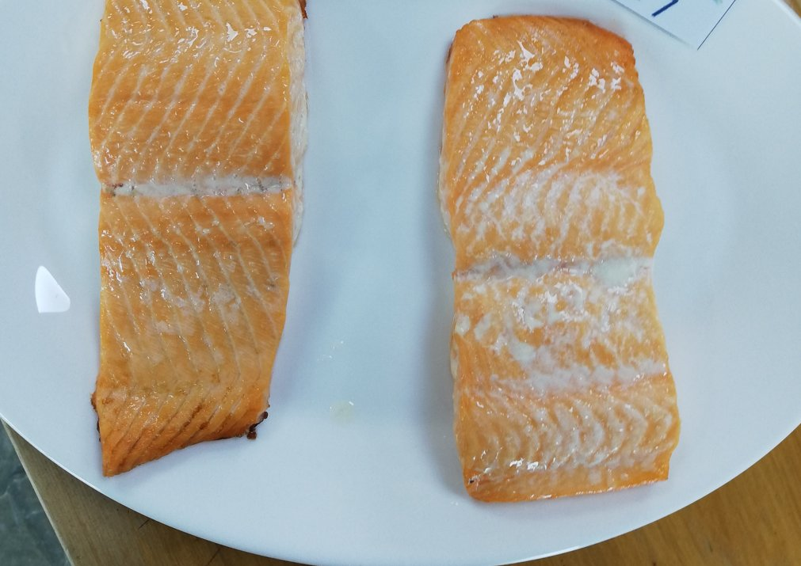
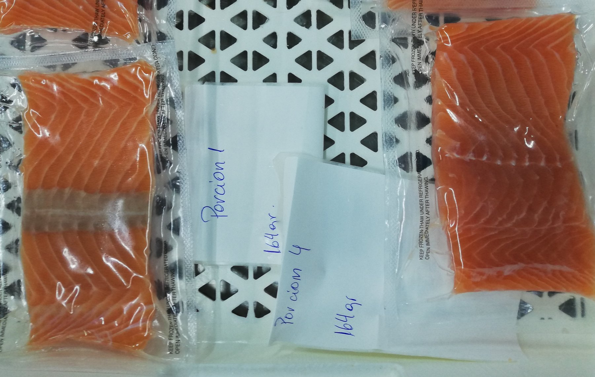
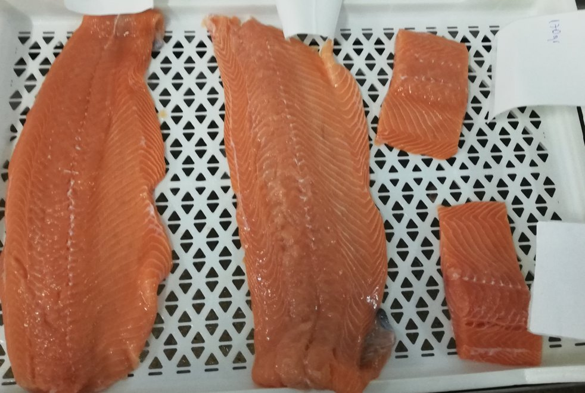

Porciones de Salmón
ANPEIX 100 PLUS SP
Porciones de salmón envasadas al vacío
Aplicación de ANPEIX 100 PLUS SP en porciones de salmón envasadas al vacío, realizando inmersión en una solución al 2,5% por 20 minutos. Se evaluó rendimiento post inmersión drip y la diferencia organoléptica entre las porciones control y tratadas. Se obtuvo un aumento de rendmiento y diferencias notables en presentación y calidad del producto cocido.
3,53 a 4,88%Mejora observada de rendimiento
Color y saborMayor intensidad y menor proteína libre post cocción
0%Variación en grupo control bajo las mismas condiciones


